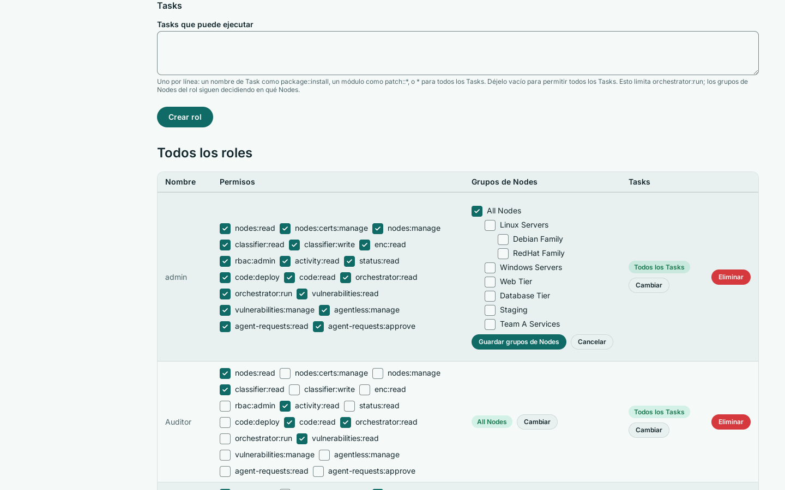

Usar
Usuarios, roles y tokens
Dé acceso a las personas mediante roles y permisos, inicie sesión con su proveedor de identidad y emita tokens para programas.
Todo en la consola está detrás de un permiso, y cada permiso llega a una persona a través de un rol. Los programas, como enc-bridge, usan en su lugar tokens de servicio.
Gestionar usuarios, roles y tokens requiere rbac:admin.
Los permisos
| Permiso | Permite |
|---|---|
nodes:read |
ver los Nodes, sus Facts, Reports, paquetes, actualizaciones pendientes y estados de certificado |
nodes:manage |
eliminar Nodes y definir con qué frecuencia la consola busca actualizaciones pendientes |
nodes:certs:manage |
firmar, revocar y limpiar certificados; equivale a administrar la CA |
classifier:read |
ver los grupos de Nodes |
classifier:write |
crear, cambiar y eliminar grupos de Nodes |
enc:read |
leer la clasificación, como hace openvoxserver |
code:read |
ver repositorios y deploys |
code:deploy |
iniciar deploys |
orchestrator:read |
ver los Jobs |
orchestrator:run |
iniciar Jobs (ejecuciones de Puppet, Tasks, Plans y ejecuciones de parches), activar o desactivar el reporte de paquetes de un Node y analizar Nodes en busca de actualizaciones pendientes |
vulnerabilities:read |
ver los hallazgos de vulnerabilidades |
vulnerabilities:manage |
configurar proveedores de vulnerabilidades |
agentless:manage |
añadir, cambiar y eliminar destinos SSH sin agente y credenciales compartidas, y confiar en sus claves de host |
activity:read |
ver el registro de actividad |
status:read |
ver la página Sistema |
agent-requests:read |
ver lo que los agentes de IA han pedido ejecutar |
agent-requests:approve |
aprobar y rechazar esas solicitudes |
rbac:admin |
gestionar usuarios, roles, tokens de servicio y tokens de agente |
El administrador inicial recibe todos los permisos. Un permiso añadido en una versión más reciente de la consola nunca se añade por usted a los roles existentes, así que, tras una actualización, conceda los nuevos en la página Roles a los roles que deban tenerlos.
Dar acceso a alguien
- Abra Administración y después Roles, y cree un rol con los permisos que requiere el trabajo; por ejemplo,
nodes:read,classifier:readyorchestrator:readpara alguien que observa pero no cambia nada. - Abra Usuarios, cree el usuario y asígnele el rol.
Los permisos de un usuario son la combinación de todos sus roles. Para dar los mismos roles a todo un equipo, use un grupo de usuarios.
Contraseñas y bloqueo
Estas reglas cubren las cuentas que inician sesión con nombre de usuario y contraseña. No cubren a las personas que inician sesión mediante su proveedor de identidad, ni los tokens de servicio. Un administrador (rbac:admin) las define en Administración y después Política de cuentas. Un cambio se aplica al instante, en todas las instancias de la consola.
Reglas de contraseña
| Regla | Salvo cambio | Puede ser |
|---|---|---|
| Longitud mínima | 12 caracteres | de 8 a 72 |
| Debe contener una minúscula, una mayúscula, un dígito, un símbolo | ninguna obligatoria | cada una activada o desactivada |
Hay dos reglas que no pueden desactivarse: una contraseña no puede ser el nombre de usuario de la cuenta ni tener más de 72 bytes.
Una contraseña se comprueba al definirla: cuando un administrador crea un usuario o define la contraseña de un usuario, y cuando alguien cambia la suya en Preferencias. Cada uno de esos formularios lista las reglas y marca las que no cumplió una contraseña rechazada.
Las contraseñas que ya existen no se vuelven a comprobar. Tras endurecer las reglas, todo el mundo puede seguir iniciando sesión; las nuevas reglas se aplican la próxima vez que se cambia cada contraseña.
Bloqueo
Tras 10 inicios de sesión fallidos seguidos con contraseña, una cuenta se bloquea durante 15 minutos. Ambas cifras pueden cambiarse (de 3 a 100 intentos; de 1 a 1440 minutos), y el bloqueo puede desactivarse.
- Mientras una cuenta está bloqueada, su contraseña se rechaza aunque sea correcta. Los inicios de sesión fallidos durante el bloqueo no lo alargan.
- El bloqueo termina por sí solo. Un inicio de sesión correcto pone el recuento a cero.
- Los inicios de sesión fallidos se cuentan de forma conjunta en todas las instancias de la consola.
- La página de inicio de sesión no dice que una cuenta esté bloqueada. Da la misma respuesta que ante una contraseña incorrecta, porque decir «bloqueada» revelaría a un atacante qué nombres de usuario existen. El mensaje de cada inicio de sesión fallido menciona que las cuentas se bloquean tras intentos repetidos.
El bloqueo existe contra la adivinación de contraseñas, así que solo impide el inicio de sesión con contraseña:
- Las sesiones ya abiertas continúan.
- El inicio de sesión mediante su proveedor de identidad sigue funcionando.
- Los tokens de servicio no se ven afectados.
- Cambiar su propia contraseña pide la actual. Una contraseña actual incorrecta cuenta como inicio de sesión fallido, y el cambio se rechaza mientras la cuenta esté bloqueada.
Desbloquear una cuenta
Abra Administración y después Usuarios. Una cuenta bloqueada muestra Bloqueada hasta y la hora. Elija Desbloquear, o Establecer contraseña para dar al usuario una contraseña nueva, lo que además desbloquea la cuenta.
Si el único administrador queda bloqueado y nadie más puede desbloquear la cuenta, espere a que termine el bloqueo. Para evitar que alguien mantenga una cuenta bloqueada fallando inicios de sesión a propósito, ponga la consola detrás de algo que limite las peticiones a /api/v1/auth/login, o desactive el bloqueo y confíe en eso.
Los bloqueos, los desbloqueos, las contraseñas rechazadas y los cambios de la política se escriben en el registro de auditoría; los bloqueos, los desbloqueos y los cambios de la política también aparecen en la página Actividad.
Dar roles a un grupo
Un grupo de usuarios es un conjunto de usuarios con nombre. Los roles concedidos a un grupo los tienen todos sus miembros, además de los roles que tengan por sí mismos, así que cuando cambia un equipo se cambia el grupo en lugar de cada cuenta.
- Abra Administración y después Grupos de usuarios, ponga nombre al grupo y elija Crear grupo.
- Elija Cambiar en Miembros y marque los usuarios que pertenecen al grupo.
- Marque en la columna Roles los roles que debe dar el grupo.
Una persona que pertenece a varios grupos, o que tiene un rol tanto directamente como a través de un grupo, lo tiene una sola vez. Quitarle el rol a la persona deja la concesión del grupo, y sacarla del grupo deja lo que tiene directamente.
La página Usuarios muestra los grupos de cada persona y los roles que tiene a través de ellos, como "Patcher via Web ops". Esos no pueden desmarcarse ahí: cambie el grupo. La página Roles muestra los grupos a los que se ha concedido cada rol.
Grupos y límites
Un grupo añade roles; no los fusiona. Cada rol sigue aplicándose sobre sus propios grupos de Nodes y, si la tiene, su propia lista de Tasks, igual que con los roles asignados directamente a una persona. Alguien que pertenece a un grupo que concede un rol limitado a patch::* en los servidores web, y que además tiene asignado un rol que permite todos los Tasks en los servidores de bases de datos, puede ejecutar Tasks de parches en los servidores web y cualquier cosa en los servidores de bases de datos.
Eliminar y quitar
- Eliminar un grupo quita sus roles a sus miembros. Si tiene miembros, la consola indica cuántas personas se ven afectadas antes de eliminarlo.
- Eliminar un usuario lo saca de sus grupos, y eliminar un rol lo quita de los grupos que lo tienen.
- La consola no eliminará un grupo, no le quitará un rol ni sacará a un miembro si eso dejara a nadie con
rbac:admin.
Cuándo surte efecto un cambio
Unirse a un grupo o salir de él, y conceder o revocar los roles de un grupo, surten efecto la próxima vez que se renueva la sesión de la persona, en un plazo de 15 minutos, como cualquier cambio de rol. Un Job programado se comprueba contra los grupos de su propietario cada vez que se dispara.
Cada cambio en un grupo, sus miembros y sus roles se escribe en el registro de auditoría en la categoría rbac.
Limitar un rol a algunos de sus Nodes
Los permisos de un rol se aplican a grupos de Nodes. Un rol nuevo se concede sobre All Nodes, que es toda la flota. Para limitar un equipo a sus propios servidores, conceda en su lugar el rol sobre el grupo de ese equipo:
- Asegúrese de que un grupo de Nodes contiene exactamente los Nodes que debe ver el equipo; consulte Clasificar Nodes.
- Abra Administración y después Roles.
- En la columna Grupos de Nodes del rol, elija Cambiar, desmarque All Nodes y marque el grupo del equipo.
- Elija Guardar grupos de Nodes.


Una concesión sobre un grupo cubre todos los grupos que tiene por debajo, así que un rol sobre Linux Servers también ve los Nodes de Debian Family. Los miembros del rol reciben el cambio la próxima vez que se renueva su sesión, en un plazo de 15 minutos; un Node que entra o sale del grupo aparece o desaparece en un minuto.
Alguien limitado así solo ve sus Nodes en todos los lugares donde aparecen datos de Nodes: la lista de Nodes y los Facts, Reports, paquetes y vulnerabilidades de cada Node, las cifras del dashboard, el catálogo de paquetes, la lista de vulnerabilidades, la página Jobs y los recuentos de Nodes de las páginas Grupos y Code. Un Node fuera de sus grupos responde exactamente igual que un Node que no existe. La página Nodes indica qué grupos está viendo.
Los mismos grupos limitan lo que puede hacer. Ejecutar Puppet, un Task o un Plan, activar o desactivar el reporte de paquetes de un Node, actualizar su agente, eliminarlo y firmar, revocar o limpiar su certificado requieren que el Node esté en los grupos de un rol que conceda ese permiso. Una acción que nombra un Node fuera de ellos se rechaza, y la consola indica qué Nodes eran. Cuando una acción nombra varios Nodes y uno está fuera, no se hace nada en ninguno de ellos.
Los Nodes de un Job también pueden elegirse mediante una consulta o un grupo de Nodes en lugar de por nombre; consulte Ejecutar Jobs. En ese caso se restringen en lugar de rechazarse: alguien limitado a algunos grupos de Nodes obtiene los Nodes coincidentes que están en sus grupos, y no se le dice nada del resto. Sus consultas no pueden contener una subconsulta, que de lo contrario podría servir para averiguar cosas sobre Nodes fuera de sus grupos.
Un Job programado se ejecuta como su propietario, con los roles que tenga el propietario cada vez que arranca. Quitar el rol a alguien impide que sus programaciones inicien nada; restringirlo restringe dónde se ejecutan sus programaciones. Cada persona ve y cambia sus propias programaciones, y solo un rol concedido sobre All Nodes ve y cambia las de todos.
Ver más de lo que puede cambiar
Cada permiso está limitado por los roles que lo conceden, así que ver y actuar pueden diferir. Para que un equipo vea toda la flota pero ejecute Puppet solo en sus propios servidores, dé a sus miembros dos roles:
| Rol | Permisos | Grupos de Nodes |
|---|---|---|
| Fleet readers | nodes:read, classifier:read, orchestrator:read |
All Nodes |
| Web operators | orchestrator:run |
Web Servers |
Ven todos los Nodes y todos los Jobs, y una ejecución en un servidor de bases de datos se rechaza.
Qué no limitan los grupos de Nodes
- La página Actividad. Es el registro de auditoría y nombra todos los Nodes. Conceda
activity:readsolo a personas que puedan conocer toda la flota. - Las definiciones de los grupos de Nodes. Todo el que tenga
classifier:readve todos los grupos, incluidos los nombres de los Nodes fijados en ellos, yclassifier:writepuede cambiar cualquier grupo. - Los tokens de servicio, que siempre abarcan toda la flota. Pueden limitarse a algunos Tasks, igual que un rol; consulte Emitir un token para un programa.
- Los Plans guardados. Todo el que tenga
orchestrator:readve todos los Plans, y todo el que tengaorchestrator:runpuede cambiar cualquiera de ellos. Ejecutar uno se limita a sus Nodes. - Los deploys de código, que no se refieren a un Node.
Lo que conviene saber
- Un Node que nunca ha ejecutado Puppet no tiene Facts, así que no coincide con la regla de ningún grupo. Solo está en los grupos de un equipo si está fijado a uno. Eso incluye los Nodes que esperan la firma de su certificado; consulte Gestionar los certificados de los Nodes.
- Un rol sin ningún grupo de Nodes muestra la advertencia Sin grupos de Nodes. Sus permisos no se aplican a ningún Node.
- El historial de Jobs sigue a los grupos actuales de un Node. Cuando un Node pasa a otro grupo, sus Jobs anteriores salen con él de la vista del grupo antiguo.
Limitar un rol a algunos Tasks
orchestrator:run por sí solo permite ejecutar todos los Tasks que conoce la consola, en los Nodes que cubre el rol. Para que un equipo ejecute los Tasks de parches y nada más, dé a su rol una lista de Tasks permitidos:
- Abra Administración y después Roles.
- En la columna Tasks del rol, elija Cambiar.
- Escriba un patrón por línea y después elija Guardar Tasks. El formulario Nuevo rol tiene el mismo campo.
Un patrón es uno de estos:
| Patrón | Permite |
|---|---|
package::install |
solo ese Task |
patch::* |
todos los Tasks del módulo patch, y el Task propio del módulo, patch |
* |
todos los Tasks |
La coincidencia es exacta y distingue mayúsculas de minúsculas, así que patch::* no permite patching::apply. No se acepta nada más: un patrón con un comodín en cualquier otra posición, una línea vacía o una letra mayúscula se rechaza, y el formulario conserva lo que escribió. Un rol puede tener hasta 20 patrones de hasta 64 caracteres.
Un rol sin patrones permite todos los Tasks. Así quedan todos los roles que ya tiene, de modo que nada cambia hasta que añada uno. La lista solo restringe orchestrator:run: nunca concede nada, y los grupos de Nodes del rol siguen decidiendo qué Nodes.
Cómo se combinan los roles de una persona
La lista de cada rol se aplica sobre los grupos de Nodes propios de ese rol, no sobre todos los de la persona. Alguien con estos dos roles:
| Rol | Grupos de Nodes | Tasks |
|---|---|---|
| Web patchers | Web Servers | patch::* |
| Database operators | Database Servers | (todos los Tasks) |
puede ejecutar patch::apply en un servidor web y cualquier Task en un servidor de bases de datos, y un Task como package::install se rechaza en un servidor web. Tener el segundo rol no amplía el primero.
Cuando se inicia un Task en Nodes elegidos mediante una consulta o un grupo de Nodes, se ejecuta en los Nodes coincidentes en los que la persona puede ejecutarlo, y no se le dice nada del resto, igual que con los grupos de Nodes. Un Plan se restringe a los Nodes en los que pueden ejecutarse todos sus pasos de Task, de modo que todos sus pasos se siguen ejecutando en los mismos Nodes. Una lista de Nodes nombrados que incluye uno en el que el Task no está permitido se rechaza, indicando cuál.
Cómo es un rechazo
Iniciar un Task que los roles de la persona no permiten se rechaza con 403 y el nombre del Task; no se inicia nada. Un Plan indica además el paso, como step 2 (package::install). Un Task que no existe y uno que la persona no puede ejecutar se rechazan igual, para que la lista no revele qué Tasks existen. Cada rechazo figura en el registro de auditoría como task.denied, con la persona, el Task y el paso, y nunca los parámetros del Task.
Lo que la lista no limita:
- Las ejecuciones de Puppet, que no son Tasks.
- Ver los Jobs y su historial. Limita lo que alguien puede iniciar.
- Las personas que solo pueden leer. Alguien con
orchestrator:ready sinorchestrator:runve todos los Tasks en la lista de Tasks.
El diálogo Ejecutar Task, el editor de Plans y el formulario de programación solo ofrecen los Tasks que la persona puede ejecutar.
Plans y programaciones
- Guardar un Plan o una programación con un Task que la persona no puede ejecutar se rechaza, indicando el paso y el Task.
- Un Plan que guardó otra persona muestra todos sus pasos a alguien con una lista más restringida, con marcados los pasos que no puede ejecutar. No puede ejecutarlo, ni guardar cambios en él sin quitar esos pasos.
- Una programación se comprueba cada vez que arranca, contra los roles que tenga su propietario en ese momento. Si el propietario ya no puede ejecutar uno de sus Tasks, no se inicia nada y el disparo queda registrado como omitido, indicando el Task (y el paso, en el caso de un Plan).
Cuándo surte efecto un cambio
La lista de un rol llega a las sesiones de una persona la próxima vez que se renuevan, en un plazo de 15 minutos, como cualquier otro permiso. Una programación la aplica en su siguiente arranque.
Las listas de Tasks de una persona viajan en su token de acceso. Los límites anteriores mantienen cada rol en unos 1,3 KB como máximo, y la mayoría de las personas llevan unos pocos patrones cortos. Si da a alguien muchos roles restringidos, compruebe que el proxy inverso delante de la consola acepta cabeceras de petición de ese tamaño; algunos solo permiten 8 KB.
Iniciar sesión con su proveedor de identidad
La consola también puede iniciar la sesión de las personas mediante OpenID Connect. El inicio de sesión local y los tokens de servicio siguen funcionando junto a él. Registre la consola en su proveedor, con la URL de redirección https://console.example.com/api/v1/auth/oidc/callback, y defina:
| Ajuste | Qué es |
|---|---|
CONSOLE_OIDC_ISSUER |
la URL del emisor (issuer) de su proveedor |
CONSOLE_OIDC_CLIENT_ID, CONSOLE_OIDC_CLIENT_SECRET |
el registro de la consola |
CONSOLE_OIDC_REDIRECT_URL |
la URL de redirección anterior |
CONSOLE_OIDC_SCOPES |
por defecto, openid profile email groups |
CONSOLE_OIDC_USERNAME_CLAIM |
el claim del que procede el nombre de un usuario nuevo; por defecto, email |
CONSOLE_OIDC_ROLE_CLAIM |
el claim que lista los grupos de una persona; por defecto, groups |
CONSOLE_OIDC_ROLE_MAPPING |
un objeto JSON que asigna valores de claim a nombres de rol, como {"platform-admins":"admin"}; cada rol debe existir ya, y los valores sin asignar se ignoran |
La página de inicio de sesión ofrece entonces Iniciar sesión con SSO. En cada inicio de sesión, la consola da a la persona los roles asignados que nombran actualmente sus claims, y le quita los roles asignados que ya no nombran. Un rol que un administrador asignó a mano nunca se toca.
Su proveedor debe poner los claims de nombre de usuario y de grupos en el propio ID token, no solo detrás de su endpoint de user-info. Algunos proveedores los dejan fuera del ID token por defecto cuando también emiten un token de acceso, y necesitan un ajuste para incluirlos.
Emitir un token para un programa
Un token de servicio tiene un conjunto fijo de permisos elegido al crearlo, y nunca caduca por sí solo. Dé a cada programa el suyo, solo con lo que necesita:
- Abra Administración y después Tokens de servicio.
- En Nuevo token de servicio, póngale nombre y elija sus permisos.
- Opcionalmente, en Tasks que puede ejecutar, liste los Tasks que puede iniciar, un patrón por línea, como para un rol. Déjelo vacío para permitir todos los Tasks. La lista se fija al crear el token.
- Elija Crear token de servicio y copie el token: solo se muestra una vez.
Eliminar un token de servicio lo revoca en todas las instancias de la consola a la vez. Cerrar sesión revoca de la misma forma los tokens de esa sesión.
Para dar acceso a un agente de IA, use en su lugar un token de agente: caduca, está limitado a grupos de Nodes y cada cambio que pide espera la aprobación de alguien. Consulte Permitir que los agentes de IA usen la consola.
Mantener un registro de auditoría
Todos los cambios hechos desde la consola están en la página Actividad, que requiere activity:read. Aparte, la consola puede escribir un registro de auditoría para un recolector de logs, con un nivel por categoría:
| Ajuste | Categoría |
|---|---|
CONSOLE_AUDIT_NODES |
Nodes y certificados |
CONSOLE_AUDIT_CLASSIFIER |
grupos de Nodes |
CONSOLE_AUDIT_RBAC |
usuarios, grupos de usuarios, roles y tokens |
CONSOLE_AUDIT_AUTH |
inicios y cierres de sesión |
CONSOLE_AUDIT_CODE |
deploys de código |
CONSOLE_AUDIT_ORCHESTRATOR |
Jobs, y Tasks rechazados a alguien cuyos roles no los permiten |
CONSOLE_AUDIT_VULNERABILITIES |
proveedores de vulnerabilidades |
Cada una es off, writes (el valor por defecto: cambios e inicios de sesión) o full (además, cada consulta). Los eventos de auditoría van a la salida de log de la propia consola salvo que CONSOLE_AUDIT_LOG_PATH indique un archivo.